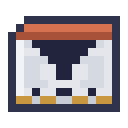

模型与测试
每个模型都要在每一项基准上测试。每项测试用的都是练习中从未出现过的例子，而每项工作向模型提问的格式与测试完全相同，所以测试得分就是智能体做对决定的频率。
| 基准 | 练习 | 测试内容 | 通过标准 | 用于 |
|---|---|---|---|---|
| 预报 | 预报数据集 | 作物每次查看时的生长阶段和机器的进度 | 损失 ≤ 0.21 | 预报机 |
| 回忆 | 储物数据集 | 货物和它们的箱子，再问其中一种 | 90% | 储物 |
| 倒序 | 跑腿数据集 | 去程的路标，然后是回家的路 | 90% | 搬运 |
| 归纳 | 规律数据集 | 一串字母再次出现的地方 | 90% | 建筑师 |
| 分拣 | 分拣数据集 | 一个个物名及各自的类别，有些是编造的 | 90% | 分拣 |
| 指令 | 指令数据集 | 指令，以及它本意的程序，要整段写对 | 40% | 指令 |
| 阅读 | 档案驱动器 | 没有任何残片收录的记录 | 损失 ≤ 1.40 | 阅读器 |
| 控制 | 工艺数据集 | 每种矿石的熔炼，90% 的查看保持在温区内 | 90% | 冶炼炉 |
| 勘测 | 勘测数据集 | 一行行地层，某种矿石最前面那块在哪里 | 90% | 勘测仪、外骨骼的矿脉开采 |
| 驾驶 | 飞行数据集 | 每种风里的飞行，90% 的查看停在原来的高度 | 90% | 飞行背架、外骨骼 |
| 需求 | 需求数据集 | 端口每次查看送出了多少，有节奏 | 90% | 端口的目标 |
| 看守 | 看守数据集 | 一切正常的情况；测试里有的出了问题 | 90% | 哨所 |
| 算账 | 算账数据集 | 把一行数相加，写出每一步累计 | 70% | 化验：一矿出九 |
| 程序 | 调校台 | 为指令写的程序，放进沙盒运行 | 75% | 不用点头的指令 |
| 精准 | 调校台 | 熔炼保持在区间中的一格 | 90% | 一矿出六 |
| 检索 | 检索数据集 | 说出名字和想要的东西，以及各自的用途 | 90% | 终端的搜索 |
| 质量 | 档案驱动器 | 一份份文档，其中一半被坏线路弄坏了 | 90% | 精炼厂 |
| 安全壳 | 安全壳数据集 | 每种燃料的周期，90% 的查看保持在带内 | 90% | 反应堆 |
| 模加法 | 模加法数据集 | 绕着轮子的加法，练习从未出现的数对 | 90% | 找到规律 |
| 模仿 | 模仿数据集 | 生物真实的举动，来自它没读过的战斗 | 76% | 竞技场 |
| 地层 | 地层数据集 | 它没读过的一行行地层，逐个方块 | 损失 ≤ 0.97 | 书写地层 |
把鼠标悬停在核心「测试」页上的某项基准上，可以看到准确的格式。「试用」页展示模型回答一个新例子，就像智能体提问那样。
同时练习几件事
核心的四个数据槽一起练习：每一步轮流从其中一个抽取批次。只要模型够大、结构合适，一个模型就能学会全部。每项基准要求的东西不同：预报机器只需要前一次查看，预报一块普通的田也是如此；回忆要找到很久之前的一对；倒序要知道每个路标的位置；归纳要回头找上次同一个字母后面跟着什么；分拣要在名字里找出决定类别的那个词。指令要写出一整段程序，名字得一个字母一个字母地抄，只有写对到最后一个字母才算数：通过测试的模型，大约五条指令里有两条第一次就写对，越长的越难写对，所以智能体会把它们复述给你。曲线变平时，调低学习率。
边玩边练
控制不是从例子中练习，而是边玩边练：核心用模型自己的选择进行熔炼，模型根据每个选择之后熔炼的表现，比同一次查看、同一温度下其他选择之后好多少，来学习这个选择。效果好的选择学得多，效果差的学得少。这比从例子中学习慢，因为每一步都要先进行熔炼。至少 90% 的查看落在温区内，这次熔炼就算保住了，冶炼炉的第三个锭正是由此而来；测试按模型保得最差的那种矿石保住的比例计分。要保住熔炼，就得预见接下来会发生什么：新一批矿石何时让熔炼降温，这种矿石如何漂移。这需要一个知道自己处在熔炼哪一步、记得开头是哪种矿石的模型。只能看到最后几个字符的模型能保住大多数铜矿的熔炼，金和铁却一次也保不住；两块的 Transformer 练两百到四百步就能通过，不过练习时得分仍会不时上下摆动。
记住数对，和懂得规律
模加法数据集问的是 59 齿轮上的加法，每个数一个字符：ab= 和绕着轮子得到的结果。练习出现十分之四的数对，总是同样那些，测试问其余的。只有规律才能从前者带到后者。
小模型几百步就能背下看到的数对，之后很长时间对其他数对一无所知。训练损失接近零，测试却停在原地。然后，只要「训练」页上的权重衰减足够大，测试就会在几千步内爬到顶。衰减只留下一直有用的东西，而规律比数对表小得多。值得看一次。
在宽度 32 的嵌入表上接两条延迟线，进拼接器，然后是 128 宽的线性层、激活层和词表宽度的线性层，就能做到（21,000 个参数）。学习率 1e-2、衰减 0.1 时，它在第 500 步记住了数对，大约第 8,000 步学会了其余全部，训练不到半分钟；用核心通常的衰减 0.01，40,000 步后其余的也只会 12%。32 宽的两块 Transformer 在衰减 0.3 时约 10,000 步也能做到。衰减非常强时，Transformer 会直接学到规律，从来不会只记住数对。
核心每 250 步把两边的每个数对都读一遍。模型记住至少 80% 的数对、其余的最多 30%，这种状态持续至少 1,000 步，且比学会它们所花的时间再长一半，然后其余的答对 90%，就算顿悟了。
检查点
 合成
合成一个检查点保存一个模型：它的机器、权重、训练时长和得分。保存前会先跑一遍所有测试，所以检查点上的分数一定是它自己挣来的。在检查点上再次保存会替换上面的模型。
模型能有多大
智能体脑中最多能装下 160 KB 的权重。用 fp32 训练的模型每个权重占四个字节，也就是 40,000 个参数；更窄的配方能装下更多参数。更大的模型留在模型服务器里，通过中继器提问：见模型服务。「训练」页会统计模型的参数，「配方」页显示它们占多少。外骨骼的板子能存同样多的字节，靠量化带上更大的模型。
偷看后文
一个能看到自己要预测的那个字母的模型，其实什么也没在预测。核心会检查每个模型有没有这个问题。偷看后文的模型分数很高，却毫无意义；它的检查点会注明这一点，阅读器也会拒绝它。





 紫水晶碎片权重晶体检查点
紫水晶碎片权重晶体检查点